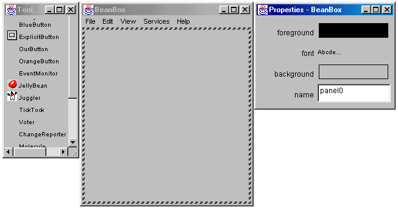
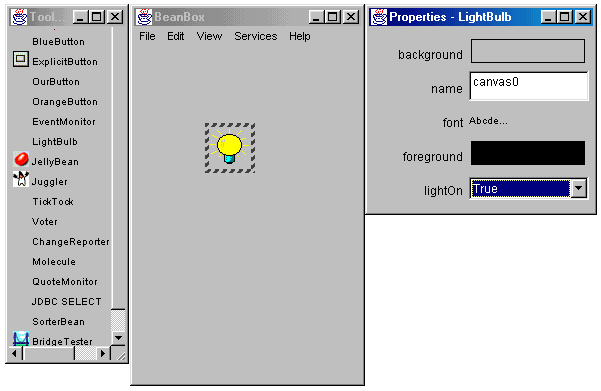
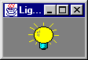

46.3 Die Beanbox
46.3.1 Beschreibung und Installation
Zur Unterstützung beim Entwurf und Testen von Beans und als Referenzplattform
für die Demonstration des Bean-Konzepts wurde von SUN das Bean
Development Kit (kurz BDK)
entwickelt. Es wird frei zur Verfügung gestellt und kann beispielsweise
über die Java Beans Homepage von
http://java.sun.com/products/javabeans/
heruntergeladen werden. Während der Erstellung dieses Kapitels
wurde die Version 1.1 verwendet. Wichtigster Bestandteil des BDK ist
die Beanbox, die eine einfache Umgebung zum Testen von selbst
entwickelten Beans zur Verfügung stellt. Bevor wir uns ihrer
Bedienung zuwenden, soll die Installation des BDK beschrieben werden.
Installation des BDK
Die Installation des BDK ist einfach; Voraussetzung ist ein funktionierendes
JDK. Unter Windows gibt es ein menügesteuertes Installationsprogramm
»bdk1_1-win.exe«, das die meisten Schritte übernimmt.
Nachdem es gestartet wurde, müssen zunächst die Lizenzbedingungen
akzeptiert werden, dann ist die Eingabe des Installationsverzeichnisses
erforderlich. Sind mehrere Java-Interpreter vorhanden, muss anschließend
ausgewählt werden, welcher von ihnen zum Betrieb des BDK verwendet
werden soll. Nach Drücken des »Install«-Buttons wird
dann mit der Installation begonnen. Die Installationsroutine legt
auch einen Uninstall-Eintrag an, mit dem das BDK bei Bedarf deinstalliert
werden kann.
Die Aufrufscripte
Nach der Installation befindet sich eine Datei run.bat
im Unterverzeichnis beanbox
des BDK-Verzeichnisses (analog dazu gibt es das Shell-Script run.sh
zum Starten der Beanbox auf UNIX-Systemen). Diese Batchdatei setzt
den CLASSPATH auf die benötigten
Klassen- und .jar-Dateien und startet
die Beanbox. Sie ist leider etwas archaisch. Einerseits wird der aktuelle
CLASSPATH überschrieben.
Zudem war sie im Test mitunter instabil, wenn der Hotspot-Compiler
aktiviert war. Eine modifizierte Version von run.bat
könnte etwa so aussehen (analoge Anpassungen können für
die UNIX-Version vorgenommen werden):
@echo off
set OLDCP=%CLASSPATH%
echo saving old CLASSPATH in OLDCP: %OLDCP%
set CLASSPATH=classes;..\lib\methodtracer.jar;..\infobus.jar
java -classic sun.beanbox.BeanBoxFrame
set CLASSPATH=%OLDCP%
set OLDCP=
echo CLASSPATH restored to %CLASSPATH%
46.3.2 Grundlagen der Bedienung
Nach dem Aufruf des Startscripts run
wird die Beanbox gestartet und präsentiert ihre aus vier Top-Level-Frames
bestehende Arbeitsoberfläche:
Bedienelemente

Abbildung 46.2: Die Beanbox
- Das linke Fenster zeigt die Toolbox an. Sie enthält
eine Liste mit allen verfügbaren Beans.
- Das mittlere Fenster stellt den GUI-Designer dar, in dem ausgewählte
Beans platziert werden. Hier können die Beans verschoben, in
der Größe verändert und zur Bearbeitung ausgewählt
werden.
- Das rechte obere Fenster enthält den Property-Editor,
mit dessen Hilfe die Eigenschaften der ausgewählten Bean modifiziert
werden können.
- Der rechts unten angezeigte Method Tracer dient zur Unterstützung
beim Debuggen und soll hier nicht weiter behandelt werden. Er kann
mit dem Menüpunkt »Services.Hide_Method_Tracing« deaktiviert
werden.
Einfügen und Modifizieren von Beans
Um eine Bean zu bearbeiten, muss sie zunächst im GUI-Designer
platziert werden. Dazu ist sie in der Toolbox anzuklicken und mit
einem erneuten Klick im GUI-Designer zu platzieren. Der schraffierte
Rand zeigt an, dass sie ausgewählt wurde und ihre Eigenschaften
im Property-Editor modifiziert werden können. Durch Ziehen an
einem der vier Ränder kann die Bean beliebig verschoben werden.
Ist ihre Größe variabel, kann sie durch Ziehen an einer
der vier Ecken verändert werden. Soll eine Bean aus dem GUI-Designer
entfernt werden, ist sie zu markieren und mit dem Menüpunkt »Edit.Cut«
zu löschen.
Als Beispiel wollen wir die vordefinierte Bean »OrangeButton«
im GUI-Designer platzieren. Sie stellt sich zunächst als oranges
Rechteck dar, das nach einem Mausklick kurz die Farbe wechselt. Im
Property-Editor können die öffentlichen Eigenschaften der
Bean verändert werden:
- »background« verändert die Hintergrundfarbe. Sie
ist standardmäßig orange und kann durch Klick auf das farbige
Panel verändert werden. Der angezeigte Farbauswahldialog ist
allerdings etwas rudimentär und erlaubt lediglich die direkte
Eingabe eines RGB-Werts oder die Auswahl einer vordefinierten Farbkonstante.
- »foreground« verändert die Farbe, in der der Rahmen
des Buttons gezeichnet wird. Hier kommt derselbe Farbdialog wie zuvor
zum Einsatz.
- Die Eigenschaft »label« definiert die Bezeichnung des
Buttons. Wird der Wert in diesem Textfeld geändert, passt sich
die Beschriftung des Buttons entsprechend an.
- Schließlich können mit der Eigenschaft »font«
die Schriftart und -größe geändert werden, in der
die Beschriftung des Buttons angezeigt wird. Auch hier wird der Änderungsdialog
durch Klicken auf den angezeigten Wert aufgerufen. Er präsentiert
sich ähnlich spartanisch wie der Farbdialog. Immerhin können
die relevanten Font-Parameter verändert werden und auch die Eigenschaftenanzeige
verändert sich in Abhängigkeit von der Font-Auswahl.
Events
Die Beanbox bietet die Möglichkeit, eine Bean über die von
ihr generierten Events mit einer anderen Bean zu verbinden. Um das
beispielhaft zu demonstrieren, soll zusätzlich eine Instanz der
Bean vom Typ »EventMonitor« im GUI-Designer platziert werden.
Dann klicken wir den Button an und rufen den Menüpunkt »edit.Events.buttonPushed.actionPerformed«
auf. Wenn die Maus nun den Button verlässt, bleibt sie über
eine rote Linie mit dem Button verbunden. Wir ziehen diese Linie auf
den »EventMonitor« und führen einen weiteren Mausklick
aus. In der nun angezeigten Liste aufrufbarer Methoden wählen
wir den (einzigen) Eintrag initiateEventSourceMonitoring
aus.
Die Beanbox generiert nun Java-Code für eine Adapterklasse, kompiliert
ihn und legt die resultierenden Dateien im Unterverzeichnis tmp\sunw\beanbox
ab. Gleichzeitig registriert sie die Adapterklasse für das Action-Ereignis
des Buttons und sorgt durch den Aufruf der ausgewählten Methode
innerhalb von actionPerformed
dafür, dass der Event-Listener bei jedem Buttonklick benachrichtigt
wird. Seine Aufgabe besteht darin, die ausgelösten Ereignisse
zu speichern und in einer Listbox auf dem Bildschirm anzuzeigen.
46.3.3 Integration eigener Beans
Neben den vordefinierten können auch eigene Beans in die Beanbox
integriert werden. Sie können dann wie vordefinierte verwendet,
manipuliert und serialisiert werden. Im Folgenden wollen wir beschreiben,
welche Schritte nötig sind, um eine Bean in der Beanbox verwendbar
zu machen. Für die Einbindung in eigene GUI-Designer kann eventuell
eine etwas andere Vorgehensweise erforderlich sein. Dazu sollte die
Bean-Dokumentation des jeweiligen Entwicklungssystems konsultiert
werden.
Entwickeln und Übersetzen der Bean
Die ersten beiden Schritte, das Entwickeln und Übersetzen der
Bean, haben wird schon erledigt. Sie unterscheiden sich in keiner
Weise von der einer herkömmlichen Java-Klasse. Als Ergebnis ensteht
eine Klasse LightBulb.class
mit dem Bytecode der Glühlampen-Bean.
Erzeugen einer Manifest-Datei
Um bei GUI-Designern mit einer großen Anzahl unterschiedlicher
Beans ein schwer zu durchschauendes Sammelsurium kleiner Klassendateien
zu vermeiden, werden Beans in jar-Archive verpackt und so an den GUI-Designer
übergeben. Eine jar-Datei darf beliebig viele Beans enthalten.
Um dem GUI-Designer die Möglichkeit zu geben, Klassen für
Beans von solchen mit reinen Hilfsfunktionen zu unterscheiden, wird
dem jar-Archiv eine Manifest-Datei
hinzugefügt, die ihren Inhalt beschreibt. Es handelt sich um
eine normale Textdatei, die für jede enthaltene Bean einen Eintrag
der folgenden Form enthält:
Name: BeanClassFile.class
Java-Bean: True
|
Der erste Eintrag gibt den Klassennamen an. Der zweite besagt, dass
es sich um eine Bean handelt (Manifest-Dateien können auch noch
andere Informationen über die im Archiv gespeicherten Dateien
enthalten). Die Informationen werden zweckmäßigerweise
in eine Textdatei manifest.txt geschrieben
und beim Erzeugen der jar-Datei mit der Option »m« eingebunden.
Zum Einbinden der Glühlampe muss diese Datei also folgenden Inhalt
haben:
Name: LightBulb.class
Java-Bean: True
Erzeugen des jar-Archivs
Nun kann das Kommando zum Erzeugen der jar-Datei abgesetzt werden
(wir wollen sie hjp3beans.jar nennen):
jar cfm hjp3beans.jar manifest.txt LightBulb.class bulb*.gif
Die Option »c« steht für »create« und besagt,
dass eine neue jar-Datei angelegt werden soll. Das »f« steht
für »file« und gibt an, dass als erstes Argument hinter
den Kommandobuchstaben der Name der jar-Datei steht. Das »m«
steht für »manifest« und besagt, dass als nächstes
Argument der Name der Manifest-Datei folgt. Ganz zum Schluss stehen
die Namen der einzubindenden Dateien. In diesem Fall sind das die
Klassendatei und die zur Darstellung benötigten gif-Dateien bulb1.gif
und bulb2.gif.
Die jar-Datei muss nun in das Unterverzeichnis jars
des BDK-Installationsverzeichnisses kopiert werden. Beim nächsten
Start der Beanbox wird sie automatisch gefunden, analysiert, und die
darin enthaltenen Beans werden im GUI-Designer zur Verfügung
gestellt.
Verwenden der eigenen Bean
Unsere Glühlampe wird nun in der Toolbox angezeigt und kann wie
jede andere Bean in den GUI-Designer übernommen werden. Im Eigenschaftenfenster
werden ihre Eigenschaften angezeigt und können interaktiv verändert
werden. Wird beispielsweise die Eigenschaft lightOn
von false
auf true
gesetzt, ändert die Bean ihren Zustand und die Glühlampe
leuchtet auf (siehe Abbildung 46.3).
Auch auf das Verändern der ererbten Eigenschaften (z.B. der Hintergrundfarbe)
reagiert unsere neue Komponente erwartungsgemäß mit einer
entsprechenden Änderung der grafischen Darstellung.

Abbildung 46.3: Die Glühlampe in der BeanBox
Serialisieren von Beans mit der Beanbox
Im vorigen Abschnitt wurde erwähnt, dass Beans serialisierbar
sein müssen. Dadurch ist ein GUI-Designer in der Lage, eine zum
Designzeitpunkt konfigurierte Bean dauerhaft zu speichern und sie
anderen Programmen vorkonfiguriert zur Verfügung zu stellen.
Auch die Beanbox bietet eine einfache Möglichkeit, Beans zu serialisieren
und auf der Festplatte zu speichern. Dazu ist die gewünschte
Bean im GUI-Designer zu markieren und der Menüpunkt »File.SerializeComponent«
aufzurufen. Nun ist ein Dateiname anzugeben, unter dem die konfigurierte
Bean gespeichert werden soll.
Im Folgenden wollen wir annehmen, dass die Glühlampen-Bean in
der Beanbox so konfiguriert wurde, dass das Licht angeschaltet ist
und sie unter dem Namen »lb1.ser« persistent gespeichert
wurde.
Einbinden serialisierter Beans
Soll eine serialisierte und damit vorkonfigurierte Bean in einem Programm
verwendet werden, muss sie vor dem Einbinden deserialisiert werden.
Dazu wird ein ObjectInputStream
verwendet, der die Bean mit Hilfe eines FileInputStream
aus ihrer Datei liest. Anschließend kann das deserialisierte
Objekt durch Aufruf von add
in gewohnter Weise in den Dialog eingebunden werden:
001 /* Listing4605.java */
002
003 import java.awt.*;
004 import java.awt.event.*;
005 import java.io.*;
006
007 public class Listing4605
008 extends Frame
009 {
010 public Listing4605()
011 {
012 super("LighBulbTest");
013 setLayout(new FlowLayout());
014 setBackground(Color.gray);
015 addWindowListener(
016 new WindowAdapter() {
017 public void windowClosing(WindowEvent event)
018 {
019 System.exit(0);
020 }
021 }
022 );
023 loadLightBulb();
024 }
025
026 private void loadLightBulb()
027 {
028 try {
029 ObjectInputStream is = new ObjectInputStream(
030 new FileInputStream("lb1.ser"));
031 LightBulb bulb = (LightBulb)is.readObject();
032 is.close();
033 add(bulb);
034 } catch (ClassNotFoundException e) {
035 System.err.println(e.toString());
036 } catch (IOException e) {
037 System.err.println(e.toString());
038 }
039 }
040
041 public static void main(String[] args)
042 {
043 Listing4605 frm = new Listing4605();
044 frm.setLocation(100, 100);
045 frm.pack();
046 frm.setVisible(true);
047 }
048 }
|
Listing4605.java |
Listing 46.5: Einbinden einer serialisierten Bean
Wird das Programm gestartet, lädt es die Bean und zeigt sie mit
angeschaltetem Licht:

Abbildung 46.4: Die deserialisierte Glühlampen-Bean